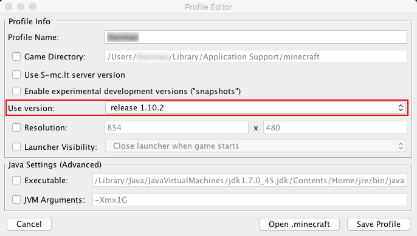
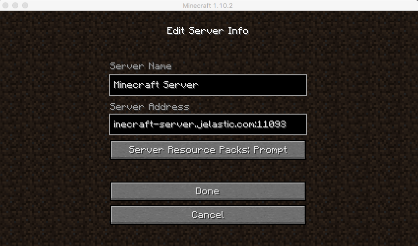
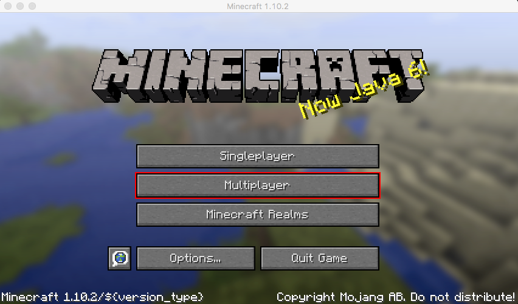

Your server is running Minecraft ver. VANILLA_VERSION
To start playing, launch you local Minecraft client and perform the following:
- Click on Change Profile button and ensure the Use version value corresponds to the Minecraft release your server is running (see it above).

- Save the changes and select the Play option.
For connection, specify the ${ENDPOINT_URL} server link within the Server Address field.

- Now just confirm the settings and select Multiplayer to start your journey throughout Minecraft world.

Visit Jelastic JPS Collection to find more useful solutions for deployment in one click.